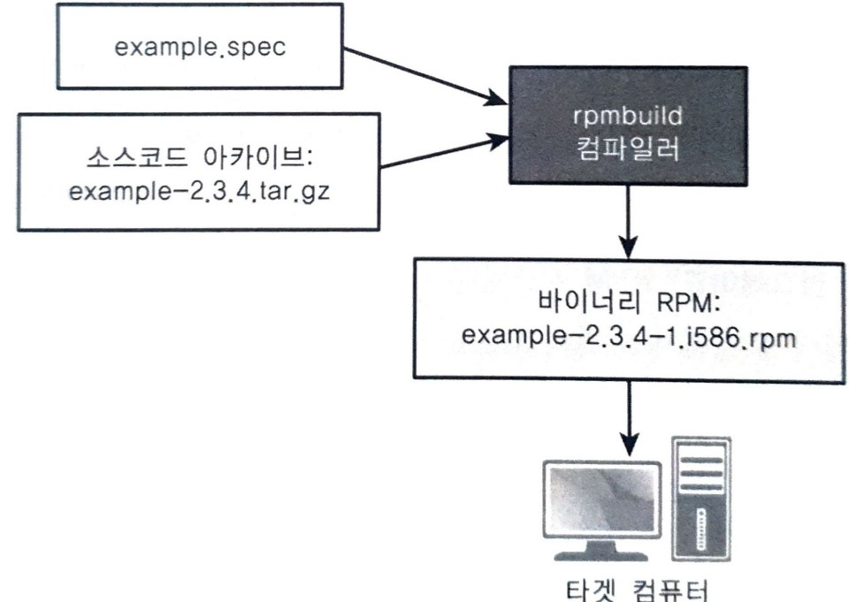
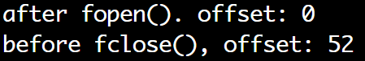

stdio <5> fseek(), fseeko(), ftell(), ftello(), rewind()
fseek():3 fseeko():3
#include <stdio.h>
int fseek(FILE* stream, long offset, int whence);
int fseeko(FILE* stream, off_t offset, int whence);
기능: stream의 파일 오프셋을 whence와 offset으로 나타내는 위치로 이동
- fseeko()가 생긴 이유: 32bit 시스템 long은 2GB가 이동 한계
- off_t는 기본적으로 long 타입
- 32bit 시스템:
#define _FILE_OFFSET_BITS 64선언 시, 32bit 컴퓨터에서도 off_t가 64bit 부호 정수형(long long)으로 정의되어 64bit 오프셋을 사용할 수 있게된다.
즉, #define _FILE_OFFSET_BITS 64 + fseeko() - 64bit 시스템: fseeko()
- 그냥 64bit면 fseeko() 쓰자
lseek()과 똑같다.
파일 디스크립터 대신 파일 포인터를 사용하는 것 만 빼면!
| return | value |
|---|---|
| 성공 | 파일의 시작으로 부터 오프셋 위치 |
| 실패 | -1 |
| parameter | Description |
|---|---|
| *stream | 대상 파일 포인터 스트림 |
| offset | 오프셋 |
| whence | 모드 |
| whence | 이동 위치 |
|---|---|
| SEEK_SET | 파일의 처음을 기준으로 오프셋 계산 및 이동 |
| SEEK_CUR | 파일의 현재 위치을 기준으로 오프셋 계산 및 이동 |
| SEEK_END | 파일의 마지막을 기준으로 오프셋 계산 및 이동 |

ftell():3, ftello():3
#include <stdio.h>
long ftell(FILE *stream);
off_t ftello(FILE *stream);
기능: stream의 파일 오프셋 값을 반환
- 32bit 시스템: #define _FILE_OFFSET_BITS 64 + ftello()
- 64bit 시스템: ftello()
#include <stdio.h>
#include <string.h>
int main(void){
FILE *fp;
if(!(fp=fopen("datafile","w"))){
perror("fopen() fail\n");
return -1;
}
printf("after fopen(). offset: %ld\n", ftello(fp));
fputs("hello world!\n",fp);
fputs("hello world!\n",fp);
fputs("hello world!\n",fp);
fputs("hello world!\n",fp);
printf("before fclose(), offset: %ld\n", ftello(fp));
fclose(fp);
return 0;
}

rewind():3
#include <stdio.h>
void rewind(FILE *stream);
기능: stream의 파일 오프셋을 처음으로 되돌린다.